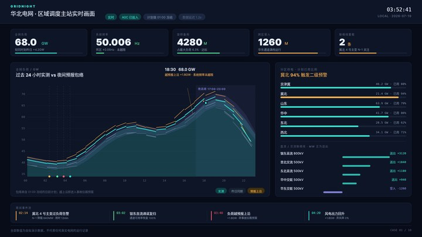
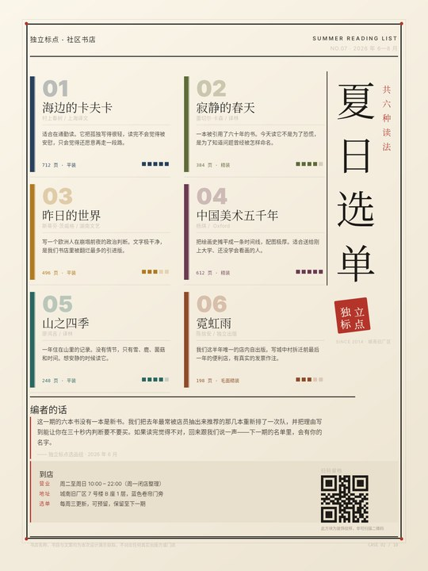
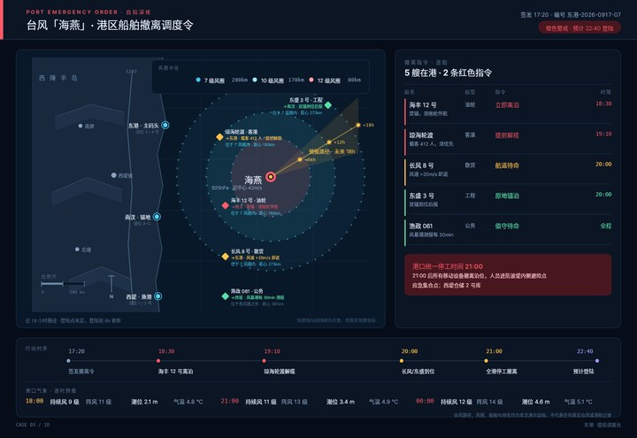
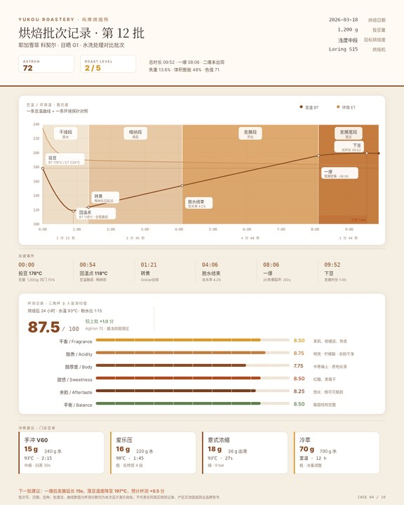
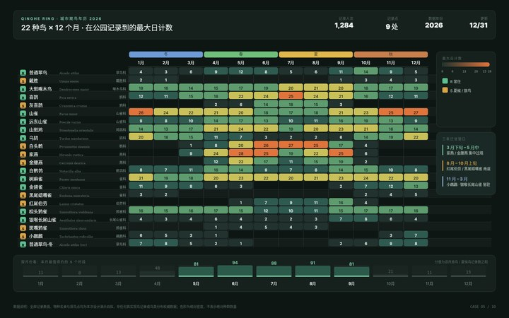
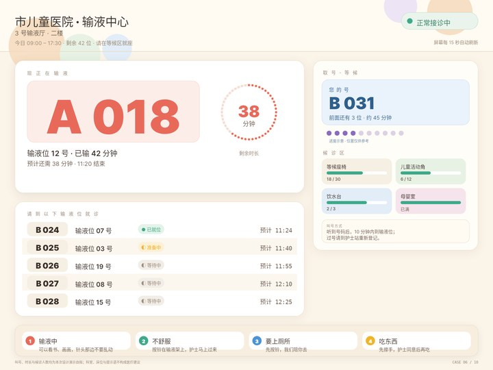
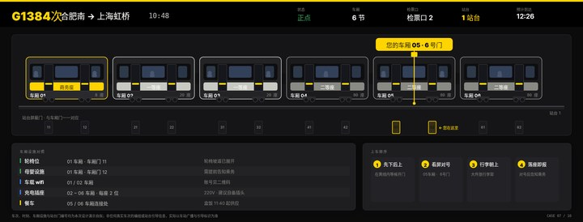
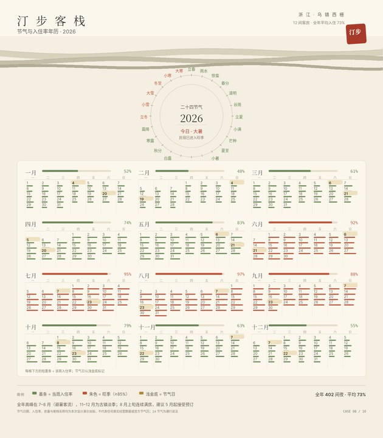
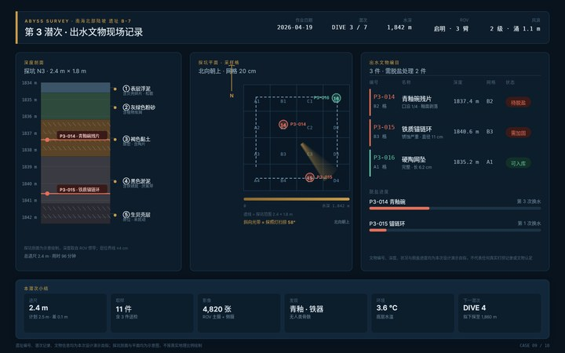
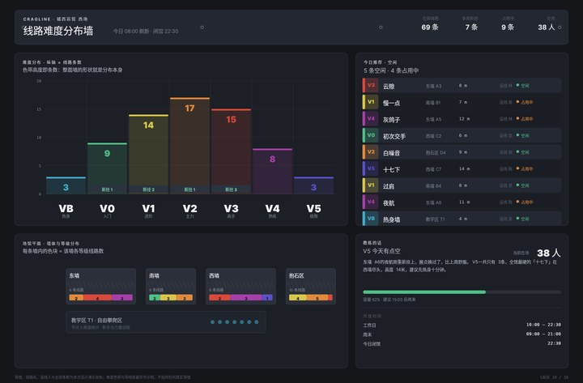

Snapshot DSL · run 20261004-182918 · 10 件独立完整用例 · 全部为服务真实渲染的原始响应字节

用户要完成的事：调度台要在余光里可读，所以颜色被压到最少：一种青代表正常量，琥珀只留给越限的区。
最有辨识度的视觉选择：右侧联络线功率条以中轴为界、正右负左，方向不需要图例就能读出
调度台要在余光里可读，所以颜色被压到最少：一种青代表正常量，琥珀只留给越限的区。右侧那五条联络线功率条以中轴分正负，「华东交联受入 −1260」是全图唯一向左的条，它自己说明方向，不需要额外图例——这是把「方向」编码进几何而不是编码进颜色的做法。

用户要完成的事：十件里唯一一件零图表。
最有辨识度的视觉选择：整版零图表，靠字号层级与书脊色条完成说服；二维码按位用矩形画出
十件里唯一一件零图表。它证明这套 DSL 的排版能力本身就够用：巨号序号、衬线书名、极小字元数据三级层次，加上书脊色条，在不引入任何图形的情况下完成说服。留白和克制在这件里是主张本身，与其他九件的高信息密度互为对照。

用户要完成的事：这是全套里唯一需要表达「随时间移动的风场」的一件。
最有辨识度的视觉选择：等值风圈用同心圆扫描线而非色块，疏密差本身就是风力等级
这是全套里唯一需要表达「随时间移动的风场」的一件。等值风圈用同心圆扫描线而不是填充色块，于是 7/10/12 级三圈之间的疏密差本身就是风力等级——不看图例的人也能读出「12 级圈已经罩到锚地」。叠加的探照灯扇形把「这次照的是哪几格」直接点亮。

用户要完成的事：这是一件要被打印、夹进记录本、并且可能溅到咖啡渍的纸卡，所以是烘焙褐单色系，没有一块蓝或绿。
最有辨识度的视觉选择：四个烘焙阶段用从浅到深的连续色带，一眼看出反应深度
这是一件要被打印、夹进记录本、并且可能溅到咖啡渍的纸卡，所以是烘焙褐单色系，没有一块蓝或绿。四个阶段用从浅到深的连续色带，「颜色越来越深 = 反应越来越深」先于文字被读到。转折点（回温点 118℃、一爆 08:06）直接钉在曲线上，让「为什么是 87.5 分而不是 88」有物理依据。

用户要完成的事：22 物种 × 12 月 = 264 格，密度高到必须分层用色。
最有辨识度的视觉选择：264 格数字直接压格，迁徙窗口注记从数据里直接给出结论
22 物种 × 12 月 = 264 格，密度高到必须分层用色。横跨 12 个月列的四季色轮管「什么时候」，绿→黄→红的密度色阶管「有多少」，两套色系互不干扰——这是密集信息组织里最关键的一次取舍。右侧三段迁徙窗口注记直接从数据推出结论并指向具体物种，把年历从「记录」变成「建议」。

用户要完成的事：观众是孩子且会不耐烦，所以号是全屏唯一的 150px 大字，圆角全部 ≥24px，没有任何细线和小字。
最有辨识度的视觉选择：底部四张「输液时可以做什么」把等待变成可一起做的事——装饰即功能
观众是孩子且会不耐烦，所以号是全屏唯一的 150px 大字，圆角全部 ≥24px，没有任何细线和小字。最特别的一处是把「装饰」当功能用：底部四张「输液时可以做什么」的卡片，每张配一个用 DSL 基本形画出的插画（书、鼓手、门、苹果）。它不传达任何数据，它让这块屏在被等的时候也有用。

用户要完成的事：唯一的问题只有一个：「我的车厢在哪扇门」。
最有辨识度的视觉选择：每节车厢画成真正的侧视图，门号与站台门一一对齐，黄线从车��引到地面
唯一的问题只有一个：「我的车厢在哪扇门」。所以每节车厢都画成真正的侧视图（车窗、门、车轮、转向架、座别色带），而不是六个色块标签；下方站台门号带与车厢门一一对齐，一条黄线把「05·6 号门」从车厢一路引到地面。空间对齐关系本身就是答案，乘客不必在图和文字之间做心算。

用户要完成的事：这是一件同时回答两个时间尺度的作品：上方圆环刻度盘回答「现在是什么时候」（今天是大暑），下方 12 个月历回答「这一年过得怎么样」。
最有辨识度的视觉选择：二十四节气做成真正的圆环刻度盘（钟面），与下方月历构成两个时间尺度
这是一件同时回答两个时间尺度的作品：上方圆环刻度盘回答「现在是什么时候」（今天是大暑），下方 12 个月历回答「这一年过得怎么样」。圆环不是图表而是钟面，二十四节气按冷暖分竹青/朱红两色，今天那一格用朱红点出。每格下方那条短墨条是当日入住率，不是装饰。

用户要完成的事：这件的读者有一半是一年后的文物保护修复师，所以它必须用一年后还认得的语言写：深度剖面、地层柱、编目号，而不是「刚才那个青碗」。
最有辨识度的视觉选择：地层柱按 cm 成比例，两件文物用红线钉在各自出水深度上，标签压在柱内
这件的读者有一半是一年后的文物保护修复师，所以它必须用一年后还认得的语言写：深度剖面、地层柱、编目号，而不是「刚才那个青碗」。地层柱按厘米成比例绘制，粗颗粒层用斜线阴影，两件文物用红线钉在各自出水深度上，标签压在柱体内部——柱子本身就是文物的「出土位置证据」，谁接手都能复核。

用户要完成的事：同一块板要同时服务两类人（新手找空闲线路、设线员看等级分布），于是做了一个反常规的选择：难度梯本身就是直方图，色带高度 = 线路条数。
最有辨识度的视觉选择：难度梯本身就是直方图：色带高度 = 线路条数，读分布与读难度是同一个动作
同一块板要同时服务两类人（新手找空闲线路、设线员看等级分布），于是做了一个反常规的选择：难度梯本身就是直方图，色带高度 = 线路条数。读分布和读难度轴变成同一个动作，不需要图例。右下角的场馆平面里，每面墙的堆叠色块是这面墙自己的等级构成——拿着这张板就能走过去。